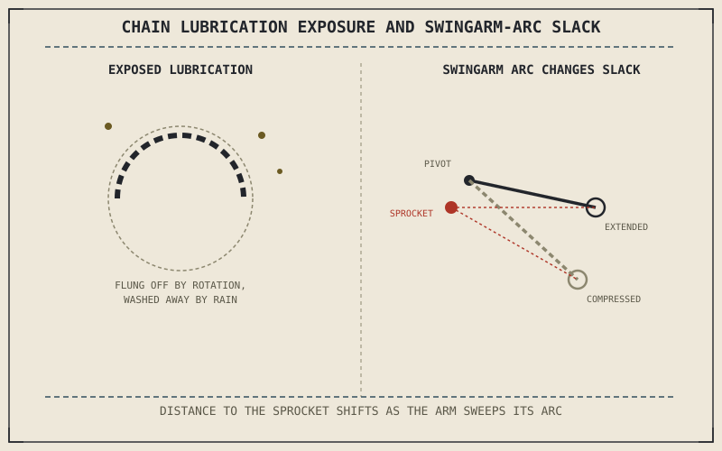

Chapter 3.6 covered chain, belt, and shaft as the three final drive options, each transmitting the transmission's output to the rear wheel differently. A chain, the most common and most maintenance-intensive of the three, is exposed directly to road grit, water, and debris in a way the engine's internal oil from Chapter 10.3 never is — its maintenance needs are correspondingly more frequent and more visible.
Chapter 10.3 closed by naming chain and final drive maintenance as this chapter's subject, carrying oil's lubrication principle to an external part of the motorcycle. This chapter covers it.
Lubrication, Exposed to the Elements Instead of Sealed
Chapter 2.16 explained lubrication's job as maintaining a protective film between moving metal surfaces, and a chain's rollers and pins need exactly that same film at every link. Unlike the engine's sealed, internally circulated oil, a chain's lubricant sits exposed on the outside of the drivetrain, constantly being flung off by centrifugal force and washed away by rain or road spray — which is why chain lubrication needs reapplication far more often than engine oil needs replacement, despite both serving the identical protective function Chapter 2.16 described.
Chain Slack and Its Direct Connection to Suspension Travel
Chapter 4.8 established the swingarm as the pivoting arm carrying the rear wheel and final drive through the rear suspension's travel, without yet spelling out a direct consequence of that pivoting motion: because the swingarm pivot isn't positioned at the same point as the front sprocket, the distance between the front sprocket and rear axle actually changes slightly as the swingarm sweeps through its arc. A chain needs a specific amount of slack to accommodate that changing distance without either binding tight at one extreme of travel or drooping excessively at the other. Checking and adjusting chain slack to the manufacturer's specified range is a direct, practical consequence of that same swingarm geometry — too little slack risks damaging the transmission's output shaft bearings as the swingarm moves through its arc, while too much slack lets the chain slap and wear unevenly.
A chain's lubricant sits exposed to rain, dust, and centrifugal force in a way engine oil never is, and its slack has to accommodate the same swingarm-arc geometry Chapter 4.8 described — both are direct, practical consequences of the chain living outside the engine's sealed environment.

A motorcycle chain shown with lubrication being flung off by rotation and washed away by water, alongside a swingarm shown at full extension and full compression with the resulting change in chain slack labeled at each position.
Sprocket Wear Reveals Chain Condition Before the Chain Itself Does
A worn chain doesn't just stretch uniformly — as it wears, the distance between rollers changes slightly, and that changed spacing gradually reshapes the sprocket teeth it engages, producing a visibly hooked or pointed tooth profile rather than the sprocket's original, evenly curved shape. Because this wear pattern is often easier to spot on the sprocket than to judge precisely on the chain itself, inspecting sprocket tooth shape is a genuinely useful diagnostic proxy for chain condition, connecting directly back to Chapter 10.1's point that maintenance items reveal information about each other rather than existing in isolation.
A Common Misconception, Cleared Up Early
It's easy to treat chain lubrication as a simple "more is better" task, applying lubricant liberally and assuming maximum coverage is always the goal. Excess lubricant flung off by chain rotation collects road grit and debris into an abrasive paste that actually accelerates wear rather than preventing it, which means correct chain maintenance is about applying the right amount at the right interval, informed by Chapter 2.16's lubrication principle, not simply maximizing how much lubricant is present at any given moment.
Where This Leads
The chain connects the drivetrain to the rear wheel; the tyre connects that wheel to the road. Chapter 10.5 turns to tyre maintenance and inspection next.
Key Concepts to Remember
- A chain's lubricant is exposed to centrifugal force, rain, and road debris, requiring far more frequent reapplication than engine oil's sealed environment needs.
- Chain slack must accommodate the changing sprocket-to-axle distance caused by swingarm arc through suspension travel, established in Chapter 4.8.
- Sprocket tooth shape is a useful diagnostic proxy for chain wear, since a worn chain's changed roller spacing reshapes the sprocket teeth it engages.
Cross-References
| ← Ch. 3.6 | Introduced chain, belt, and shaft as final drive options; this chapter covers the chain's specific, more demanding maintenance needs. |
| ← Ch. 4.8 | Established the swingarm's pivoting arc through suspension travel; this chapter shows that same arc changing sprocket-to-axle distance and setting chain slack requirements. |
| ← Ch. 2.16 | Established lubrication's protective film principle; this chapter applies that same principle to a chain exposed outside the engine's sealed environment. |
| → Ch. 10.5 | Covers tyre maintenance and inspection, the connection between the drivetrain and the road. |